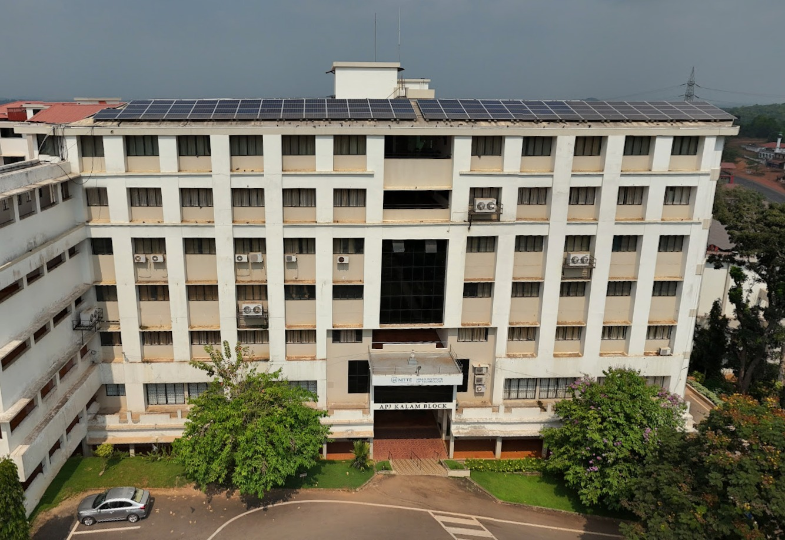

APJ ABDUL KALAM BLOCK
About the Block
Basement floor: Office Automation cell , Hostel Office , Academics and Exam section, Administration section, Electrical machine lab, High voltage lab, Control System lab, Circuits and Measurements Lab, Computer Lab- E & E, Photo copy centre
Ground floor: Pricipal, Board room, Registra, Vice-Principal, Dean(Academics),First Year Coordinator
First floor: Seminar hall, B'o-Informatics lab, Unit Opreation Lab,Down Stream Bio Processing Lab, Bio Process Control & Instrumentation Lab, Momentum Transfer Lab, Bio Chemistry Lab
Second floor:Cad lab,HOD-Bio Tech, Staff Rooms-Bio Tech, Dept.Library-Bio Tech,Visiting Staff Room, Bio Kinetics Lab, Instrumentation Lab, upstream Processing Lab
Third floor: Department of ECE
Fourth floor: Computer Networking Lab, Object Oriented Programming Lab, Systemstems Programming Lab, Data Structures and Algorithm Lab, Computer Graphics & Multimedia Lab, Microprocessors & IoT LAb